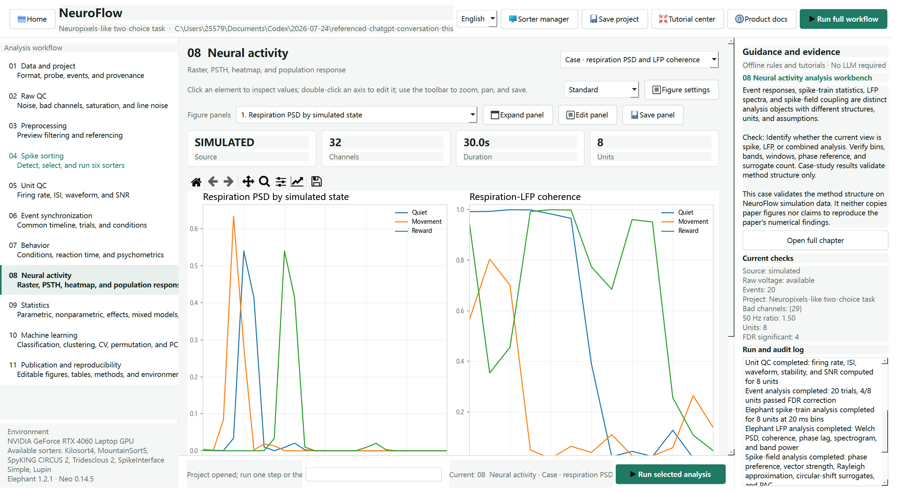
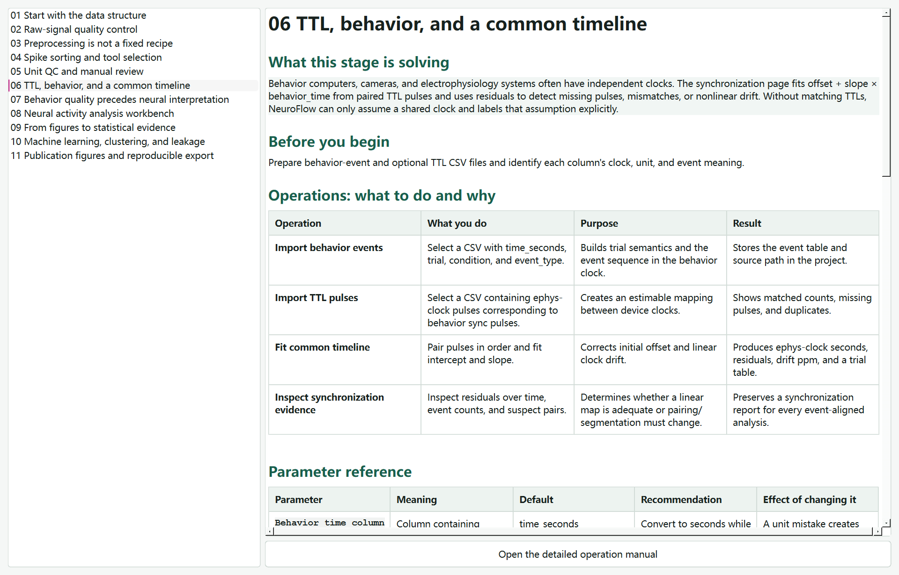

NeuroFlow operation manual
Interface and basic operation
Use the workspace in a consistent order: select a stage, choose a sub-analysis, inspect its explanation and inputs, run it from the fixed footer, then review evidence.
Workspace anatomy
| Area | What it does |
|---|---|
| Top bar | Return home, switch language, inspect sorter environments, save the project, open tutorials, and run the complete workflow. |
| Left workflow | Select one of 11 stages. Status color indicates pending, completed, skipped, or failed; it does not certify scientific validity. |
| Stage header | Select the exact view or sub-analysis. The page below shows input or previously saved results for that selection. |
| Figure area | Click marks for values, use toolbar zoom/pan, double-click an axis to edit it, or open one panel independently. |
| Right guidance | Shows the current purpose, checks, control help, data inventory, and append-only run/audit log. |
| Fixed bottom bar | Always remains visible during vertical scrolling. It names the current selection, shows progress, and runs only that selection. |
One-analysis operating sequence
- Read the stage purpose.
- Confirm that required inputs are available.
- Choose the view and settings.
- Run from the fixed footer and confirm the dialog.
- Inspect figures, tables, warnings, and logs.
- Save the project.

Tutorial center
Every workflow chapter uses the same structure: scientific purpose, prerequisites, operations, parameter reference, page controls, recommended sequence, common mistakes, checks, sources, and the next stage.

Save, close, and resume
A star in the title indicates unsaved project state. Closing prompts Save, Discard, or Cancel. Save stores the current page, workflow status, parameters, results, sorter registry, and audit log. Reopen neuroflow_project.json from the home page to resume.